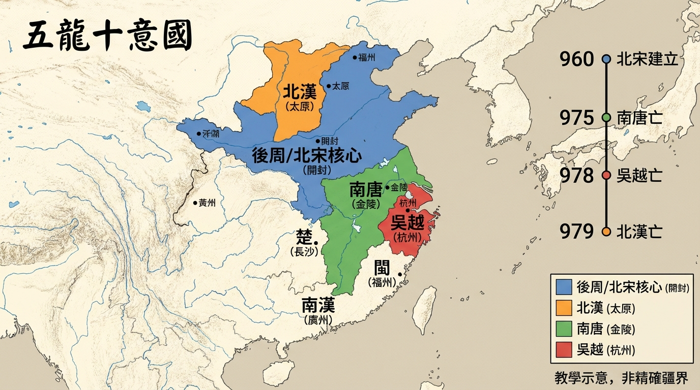
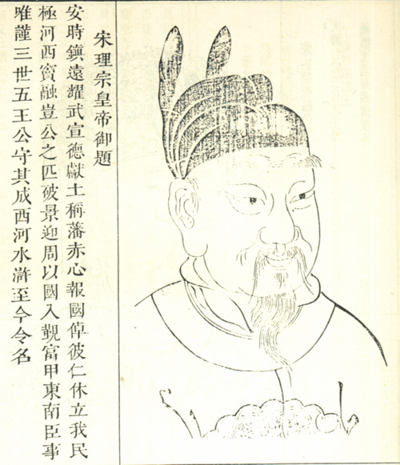
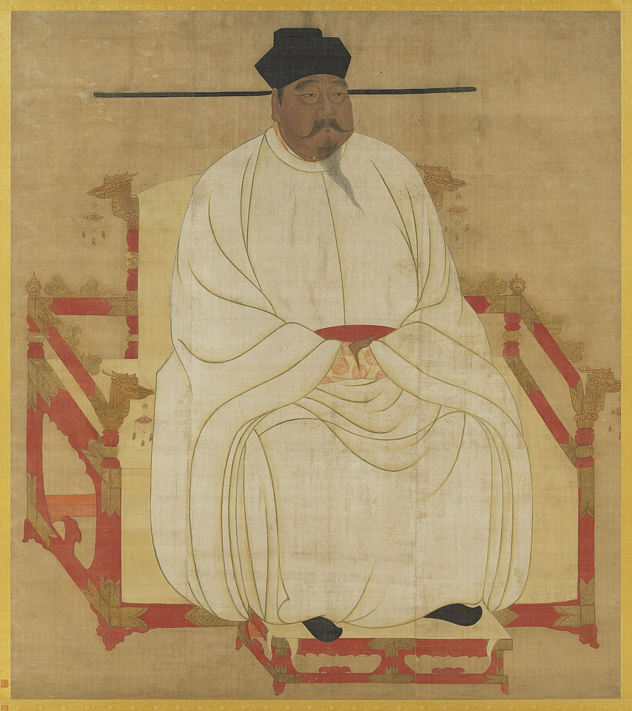
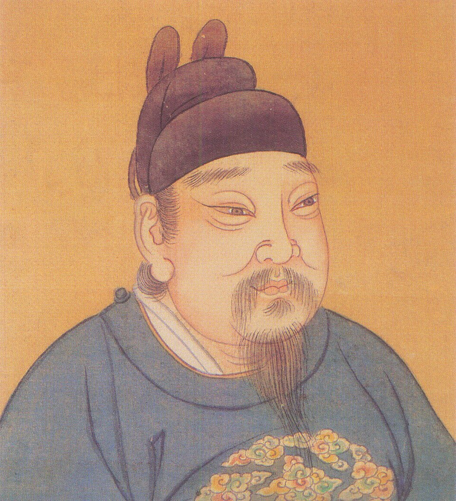
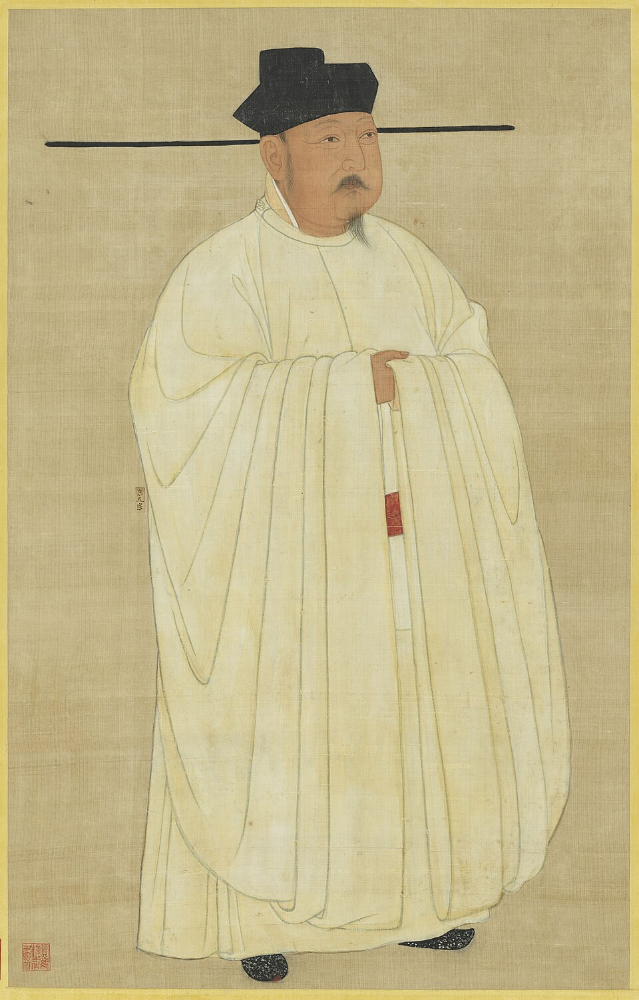

《太平年》收视与五代十国历史速览
更新时间：2026-02-08（基于可抓取公开网页整理）
主要入口
一、目前可见的收视表现
公开报道口径 A
2.696%
来源文章称：《太平年》收视率达 2.696%。
公开报道口径 B
2.801%
另一篇战报提到：CVB 收视率高达 2.801%。
说明：不同报道会因统计周期（单日/首周）、口径（平均/峰值）和发布时间不同而出现差异。
二、五代十国：看剧前的历史底图
时间范围
907—960（狭义）
广义常到 979（北汉亡）
核心格局
北方五代 + 南方诸国并立
频繁更替，战与和交织
《太平年》主线焦点
吴越“纳土归宋”
从割据走向统一的关键节点
三、可视化面板
907 → 979
中原主线
后梁 907-923
后唐 923-936
后晋 936-947
后汉
后周
北宋（960起）
吴越
907—978（与北宋由对峙走向纳土归宋）
南唐
937—975（江南重要政权，后并入宋）
北汉
951—979（最终被宋灭）
907 朱温建后梁
951 郭威建后周
960 赵匡胤建宋
975 宋灭南唐
978 吴越纳土归宋
979 宋灭北汉
976 赵光义即位（宋太宗）
1004 澶渊之盟（北宋对辽）
北宋后续（979 之后）简要：完成统一后，北宋进入“边防与财政并重”的长期阶段。宋太宗时期继续整合军政体系；宋真宗时期出现澶渊之盟（1004），此后宋辽关系进入相对稳定但长期对峙的格局。
示意图：突出《太平年》相关国家之间的主线关系（非完整外交史）。
图例：灰色箭头=政治归附/承接；红色箭头=军事并入；虚线=并立竞争关系。
地图为历史教学示意（非精确疆界线），用于理解各国大致空间分布与相邻关系。
五代十国AI出图（Gemini / nano pro）
打开原图链接
图片路径：/outputs/2026-02-11-13-49-21-wudai-shiguo-nano-pro.png
吴越（907—978）
都城：杭州（今浙江杭州）
核心：浙东浙西 + 东南沿海，海贸与水网优势明显
南唐（937—975）
都城：金陵（今江苏南京）
核心：长江中下游江南地带，水运发达
北汉（951—979）
都城：晋阳（今山西太原）
核心：河东（山西）为主，北方山地防御特征明显
后周/北宋早期
都城：汴京（今河南开封）
核心：黄河中下游平原，中原统一战略枢纽
地理主线（剧集关联）
开封（中原）→ 南京（江南核心）
南京 → 杭州（东南沿海）
最终北向收束：太原
关键年份：975（南唐并入宋） / 978（吴越纳土） / 979（北汉灭亡）。
关键地理节点（现代城市对照）
说明：如需“按年份切换地盘变化”（例如 951/960/975/978/979），我可以再做成地图时间滑块版本。
四、剧中人物 ↔ 历史人物对照表（含人物图）

钱弘俶
吴越末主 / 纳土归宋核心人物
查看人物详情 →

赵匡胤
宋太祖 / 统一进程发起者
查看人物详情 →

郭荣（柴荣）
后周世宗 / 承前启后关键君主
查看人物详情 →

赵光义（宋太宗）
赵匡胤之弟 / 北宋第二位皇帝
查看人物详情 →
北宋名将专题
曹彬、潘美、杨业等人物线
查看专题 →
| 剧中人物 | 历史人物 | 身份/时代位置 | 与主线关系 |
|---|---|---|---|
| 钱弘俶 | 钱弘俶（吴越末主） | 吴越国君，五代末—北宋初 | “纳土归宋”关键人物 |
| 赵匡胤 | 宋太祖赵匡胤 | 960年建立北宋 | 统一进程发起者 |
| 郭荣 | 后周世宗柴荣（郭荣） | 后周核心君主 | 为宋代统一奠定军事与制度基础 |
| 赵光义（常在相关叙事出现） | 宋太宗赵光义 | 北宋第二位皇帝 | 完成北汉线收束（979） |
注：当前可稳定抓取到的钱弘俶为公开报道配图；赵匡胤、郭荣使用公开历史画像。你若给我指定剧照链接，我可一键替换成纯剧照版。
五、各国领土与军事实力（简表）
| 政权 | 主要领土/核心区域 | 军事特征（定性） | 代表将领/军事人物 |
|---|---|---|---|
| 后周（后接北宋） | 中原核心：开封、洛阳一线 | 禁军体系较强，中央动员能力高，具备北伐与统一潜力 | 柴荣（世宗）、赵匡胤 |
| 吴越 | 两浙核心：杭州、越州、明州等沿海腹地 | 水陆防御与海贸支撑能力突出，重守势与务实外交 | 钱镠、钱弘俶 |
| 南唐 | 江淮—江南核心：江宁（南京）、扬州等 | 经济基础较强，曾具扩张能力；后期对抗宋军压力增大 | 李昪、李璟、李煜（君主线） |
| 北汉 | 河东/太原周边山地据点 | 依托地形防御与北方援助，持续保持割据韧性 | 刘崇（刘旻）、刘继元 |
补充：重要武将（便于追剧对照）
赵匡胤：后周禁军核心将领，后建立北宋。
曹彬：北宋统一战争的重要将领之一（后续阶段）。
潘美：宋初军事将领，在统一进程中多次出征。
杨业：北宋名将，北方防务形象代表人物之一。
注：本页“军事实力”采用历史叙述中的定性比较，不作现代统计学意义上的精确军力对比。
六、太平年页面重展示（新增视觉元素）
给你做了一版更适合转发的“图文强化版”：补了历史图、人物图和战场氛围图，手机看也更直观。
快速入口（新版）：
· 总览页：/report.html
· 赵光义详情：/people-zhao-guangyi.html
· 北宋名将专题：/people-generals-song.html
· 五代十国AI图（绝对链接）：http://141.98.197.188:3000/outputs/2026-02-11-13-49-21-wudai-shiguo-nano-pro.png
· Costa信息图（绝对链接）：http://141.98.197.188:3000/outputs/2026-02-11-15-10-24-costa-infographic-nano-pro.png
· 总览页：/report.html
· 赵光义详情：/people-zhao-guangyi.html
· 北宋名将专题：/people-generals-song.html
· 五代十国AI图（绝对链接）：http://141.98.197.188:3000/outputs/2026-02-11-13-49-21-wudai-shiguo-nano-pro.png
· Costa信息图（绝对链接）：http://141.98.197.188:3000/outputs/2026-02-11-15-10-24-costa-infographic-nano-pro.png
七、历史名词速览 + 观剧提示
名词速览
- 纳土归宋：割据政权主动献地归附中央王朝（吴越 978）。
- 陈桥兵变：960 年赵匡胤受拥立，后周转入北宋。
- 河东：以今山西为核心的战略区，北汉长期据守。
- 江南核心区：以金陵、杭州等为代表的经济密集地带。
观剧提示（不剧透版）
- 看人物对话时，优先记住“都城在哪、靠什么吃饭、跟谁接壤”。
- 涉及“称臣、纳土、入朝”时，本质是地缘和军政能力变化。
- 吴越线建议和地图页一起看，理解“为什么能和平收束”。
- 南唐线重点看“江南富庶”与“中原军事压力”如何此消彼长。
一分钟速记（适合转发）
960 北宋建立
975 南唐并入宋
978 吴越纳土归宋
979 北汉灭亡
统一完成（狭义收束）